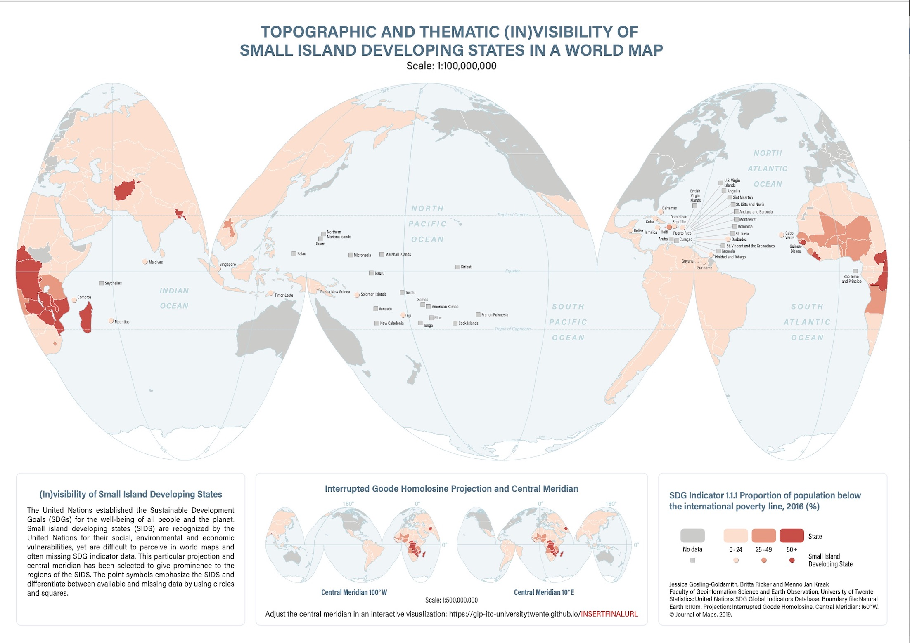

Writing
Below are a selected list of my recent peer-reviewed published work.
For a more comprehensive list please see:
New Open Access Book Published with the United Nations and the International Cartographic Association
Kraak MJ, RE Roth, B Ricker, A Kagawa, and G Le Sourd. (2021). Mapping for a Sustainable World. The United Nations: New York, NY (USA).
Ricker, B., Rickles, P., Fagg, G., Haklay, M. (2020) “Interdisciplinary research team seeking Geographic Information Scientists: Considerations for successful collaboration.” Cartography and Geographic Information Science (CaGIS). 47(4): 350-366. DOI:10.1080/15230406.2020.1748113
Ricker, B., Dierwechter, Y., Cinnamon, J. (2020) “When Open Data and Data Activism Meet: An Analysis of Civic Participation in Cape Town, South Africa” The Canadian Geographer. Special Issue titled “Smart citizens creating smart cities” 64(3): 359-373. Edited by Peter Johnson and Rina Ghose. DOI:10.1111/cag.12608
Gosling-Goldsmith, J., Ricker, B., Kraak, M.J. (2020) “Topographic and Thematic (In)visibility of Small Island Developing States in a world map.” The International Journal of Maps. 16(1): 50-56. DOI:10.1080/17445647.2020.1736194. Click map below to access full article.

Pirani, N. Ricker, B., Kraak, J. (2019) “Emotional responses to thematic maps visualizing data from the United Nations Sustainable Development Goals” The Canadian Geographer. 64(2): 184-198. DOI:10.1111/cag.12575 Recognized by Wiley Publishers as one of the most downloaded articles in the Journal.
Kraak, M.J., Ricker, B., Engelhardt, Y. (2018) “Challenges of Mapping Sustainable Development Goal indicator data.” International Journal of Geo-Information. 7(12): 482. DOI: 10.3390/ijgi7120482
Ricker, B. (2020) “Volunteered Geographic Information” In Kobayaski, A. (Ed) The International Encyclopedia of Human Geography Second Edition. Elsevier:187-195.
Ricker, B., Kraak, M.J., Engelhard, Y. (2020) “The Power of visualization choices: different images of patterns in space” Kennedy, H., Engebretsent, N.M. (Eds) Invited book chapter for Data Visualization in Society University of Amsterdam Press.
Ricker, B. (2019) “Mobile Devices” University Consortium for Geographic Information Science (GIS&T) Body of Knowledge. (2nd Quarter Edition, John P. Wilson (Ed). DOI: 10.22224/gistbok/2019.3.8
Ricker, B. and Roth, R. (2018) “Mobile Maps and Responsive Design” University Consortium for Geographic Information Science (GIS&T) Body of Knowledge. (2nd Quarter 2018 Edition), John P. Wilson (Ed). DOI:10.22224/gistbok/2018.2.5
Ricker, B. (2017). “Reflexivity, positionality and rigor in the context of big data research” In J. Thatcher, J. Eckart, A. Shears (Eds.), Thinking Big Data in Geography University of Nebraska Press.